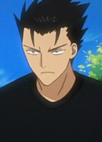
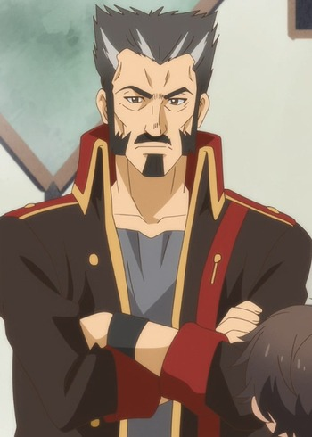

|
Caster of Red |
|
Caster of Red is the Caster-class Servant of Jean Rum of the Red Faction in the Great Holy Grail War. His true identity is William Shakespeare. Shakespeare is a legendary platwright of England, gentlemanly and soft-spoken. He will willingly employ deception, provaction or anything else for the sake of spinning the story. |
 |
Crasher Wake |
- Pokemon Diamond and Pearl
|
Crasher Wake is the Gym Leader of the Pastoria City. He specialized in Water-Type Pokemon. He is a lively person with a booming voice. He trained his Pokemon to have increasing stamina to take on powerful attacks and use defense tactic, allowing his Pokemon to ambush opponents. |
 |
Game Master |
- I'm Standing on a Million Lives
|
The Game Master is a mysterious entity from the future. He doesn't have much of a personality. He explains quest related information to players in a didactic manner. He speaks in a strange fashion, only half of the last of the last word of every one of his sentences. |
|  |
Kurogane |
- Tsubasa Chronicle
- Tsubasa Chronicle The Movie: The Princess in the Birdcage Kingdom
- Tsubasa Chronicle 2nd Series
- Tsubasa Chronicle: Tokyo Revelations
- Tsubasa Chronicle: Spring Thunder
|
Kurogane is a ninja from feudal Japan. He is serious and exetreme perceptive. He is very logal to his companions and his leader, Princess Tomoyo. Kuro has a compassionate nature and a desire to protect. He dislikes when Fai or Modoki call him ridiculous cute names. |
|  |
Worgan |
|
Worgan is the Adventurer's Guild Branch manager of the Town of Gimuru. He is kind, fair, and protective of his guild members but has an evil face. |